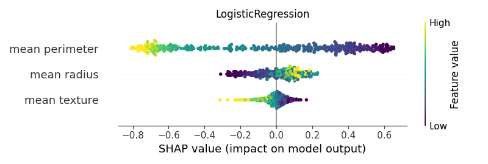
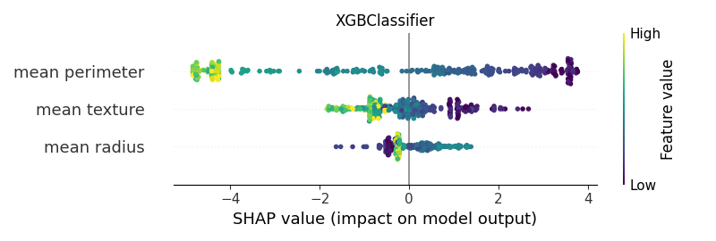

Note
Click here to download the full example code
02. Basic example
Computing SHAP values for different classifiers to understand which type of SHAP explainers can be used with the different algorithms.

- 


- 


Out:
<IPython.core.display.HTML object>
--------------------------------------------------------------------------------
Classifier: GaussianNB()
Kernel type: <class 'shap.explainers._kernel.Kernel'>
0%| | 0/375 [00:00<?, ?it/s]
3%|2 | 10/375 [00:00<00:03, 92.61it/s]
5%|5 | 20/375 [00:00<00:03, 90.19it/s]
8%|8 | 30/375 [00:00<00:03, 90.76it/s]
11%|# | 40/375 [00:00<00:03, 93.66it/s]
14%|#3 | 51/375 [00:00<00:03, 96.71it/s]
16%|#6 | 61/375 [00:00<00:03, 96.81it/s]
19%|#9 | 72/375 [00:00<00:03, 98.68it/s]
22%|##1 | 82/375 [00:00<00:02, 98.23it/s]
25%|##4 | 92/375 [00:00<00:02, 98.31it/s]
27%|##7 | 103/375 [00:01<00:02, 99.15it/s]
30%|### | 113/375 [00:01<00:02, 98.71it/s]
33%|###3 | 124/375 [00:01<00:02, 99.50it/s]
36%|###5 | 134/375 [00:01<00:02, 99.47it/s]
38%|###8 | 144/375 [00:01<00:02, 99.46it/s]
41%|####1 | 154/375 [00:01<00:02, 99.19it/s]
44%|####4 | 165/375 [00:01<00:02, 99.39it/s]
47%|####6 | 175/375 [00:01<00:02, 98.88it/s]
49%|####9 | 185/375 [00:01<00:02, 92.17it/s]
52%|#####2 | 195/375 [00:02<00:02, 88.19it/s]
54%|#####4 | 204/375 [00:02<00:01, 87.45it/s]
57%|#####6 | 213/375 [00:02<00:01, 87.83it/s]
59%|#####9 | 223/375 [00:02<00:01, 89.55it/s]
62%|######1 | 232/375 [00:02<00:01, 89.47it/s]
65%|######4 | 242/375 [00:02<00:01, 90.49it/s]
67%|######7 | 252/375 [00:02<00:01, 92.23it/s]
70%|######9 | 262/375 [00:02<00:01, 94.12it/s]
73%|#######2 | 273/375 [00:02<00:01, 96.00it/s]
76%|#######5 | 284/375 [00:02<00:00, 97.15it/s]
78%|#######8 | 294/375 [00:03<00:00, 97.37it/s]
81%|########1 | 304/375 [00:03<00:00, 97.03it/s]
84%|########3 | 314/375 [00:03<00:00, 96.56it/s]
86%|########6 | 324/375 [00:03<00:00, 95.40it/s]
89%|########9 | 334/375 [00:03<00:00, 93.52it/s]
92%|#########1| 344/375 [00:03<00:00, 92.00it/s]
94%|#########4| 354/375 [00:03<00:00, 90.90it/s]
97%|#########7| 364/375 [00:03<00:00, 92.14it/s]
100%|#########9| 374/375 [00:03<00:00, 91.33it/s]
100%|##########| 375/375 [00:03<00:00, 94.39it/s]
[[-0.21 -0.19 -0.22]
[ 0.16 0.05 0.17]
[-0.31 0.06 -0.31]
...
[-0.1 0.07 -0.14]
[ 0.15 0.03 0.16]
[-0.2 0.15 -0.25]]
base value: 0.6256054145239283
0%| | 0/375 [00:00<?, ?it/s]
2%|2 | 9/375 [00:00<00:04, 89.74it/s]
5%|5 | 19/375 [00:00<00:03, 91.01it/s]
8%|7 | 29/375 [00:00<00:03, 91.23it/s]
10%|# | 39/375 [00:00<00:03, 93.20it/s]
13%|#3 | 49/375 [00:00<00:03, 93.44it/s]
16%|#5 | 59/375 [00:00<00:03, 94.12it/s]
18%|#8 | 69/375 [00:00<00:03, 94.87it/s]
21%|##1 | 79/375 [00:00<00:03, 96.20it/s]
24%|##4 | 90/375 [00:00<00:02, 97.78it/s]
27%|##6 | 100/375 [00:01<00:02, 97.10it/s]
29%|##9 | 110/375 [00:01<00:02, 93.27it/s]
32%|###2 | 120/375 [00:01<00:02, 90.22it/s]
35%|###4 | 130/375 [00:01<00:02, 88.17it/s]
37%|###7 | 139/375 [00:01<00:02, 87.82it/s]
39%|###9 | 148/375 [00:01<00:02, 86.54it/s]
42%|####1 | 157/375 [00:01<00:02, 86.88it/s]
44%|####4 | 166/375 [00:01<00:02, 87.47it/s]
47%|####6 | 176/375 [00:01<00:02, 88.90it/s]
50%|####9 | 186/375 [00:02<00:02, 89.08it/s]
52%|#####2 | 195/375 [00:02<00:02, 89.25it/s]
54%|#####4 | 204/375 [00:02<00:01, 88.88it/s]
57%|#####7 | 214/375 [00:02<00:01, 90.33it/s]
60%|#####9 | 224/375 [00:02<00:01, 87.62it/s]
62%|######2 | 233/375 [00:02<00:01, 87.37it/s]
65%|######4 | 243/375 [00:02<00:01, 88.91it/s]
67%|######7 | 252/375 [00:02<00:01, 88.92it/s]
70%|######9 | 262/375 [00:02<00:01, 90.43it/s]
73%|#######2 | 272/375 [00:03<00:01, 91.42it/s]
75%|#######5 | 282/375 [00:03<00:01, 92.74it/s]
78%|#######7 | 292/375 [00:03<00:00, 93.46it/s]
81%|######## | 302/375 [00:03<00:00, 92.59it/s]
83%|########3 | 312/375 [00:03<00:00, 92.54it/s]
86%|########5 | 322/375 [00:03<00:00, 92.91it/s]
89%|########8 | 332/375 [00:03<00:00, 92.36it/s]
91%|#########1| 342/375 [00:03<00:00, 92.73it/s]
94%|#########3| 352/375 [00:03<00:00, 93.00it/s]
97%|#########6| 362/375 [00:03<00:00, 92.93it/s]
99%|#########9| 372/375 [00:04<00:00, 92.88it/s]
100%|##########| 375/375 [00:04<00:00, 91.32it/s]
--------------------------------------------------------------------------------
Classifier: LogisticRegression()
Kernel type: <class 'shap.explainers._kernel.Kernel'>
0%| | 0/375 [00:00<?, ?it/s]
2%|2 | 9/375 [00:00<00:04, 85.56it/s]
5%|5 | 19/375 [00:00<00:03, 90.33it/s]
8%|7 | 29/375 [00:00<00:03, 92.14it/s]
10%|# | 39/375 [00:00<00:03, 94.33it/s]
13%|#3 | 49/375 [00:00<00:03, 93.51it/s]
16%|#5 | 59/375 [00:00<00:03, 93.12it/s]
19%|#8 | 70/375 [00:00<00:03, 95.60it/s]
21%|##1 | 80/375 [00:00<00:03, 95.30it/s]
24%|##4 | 90/375 [00:00<00:02, 95.10it/s]
27%|##6 | 100/375 [00:01<00:02, 93.86it/s]
29%|##9 | 110/375 [00:01<00:02, 94.19it/s]
32%|###2 | 121/375 [00:01<00:02, 96.05it/s]
35%|###5 | 132/375 [00:01<00:02, 97.61it/s]
38%|###7 | 142/375 [00:01<00:02, 98.08it/s]
41%|#### | 152/375 [00:01<00:02, 98.35it/s]
43%|####3 | 162/375 [00:01<00:02, 98.43it/s]
46%|####5 | 172/375 [00:01<00:02, 98.22it/s]
49%|####8 | 182/375 [00:01<00:02, 92.01it/s]
51%|#####1 | 192/375 [00:02<00:02, 91.26it/s]
54%|#####3 | 202/375 [00:02<00:01, 92.43it/s]
57%|#####6 | 212/375 [00:02<00:01, 93.25it/s]
59%|#####9 | 222/375 [00:02<00:01, 94.68it/s]
62%|######1 | 232/375 [00:02<00:01, 94.86it/s]
65%|######4 | 242/375 [00:02<00:01, 94.22it/s]
67%|######7 | 252/375 [00:02<00:01, 93.20it/s]
70%|######9 | 262/375 [00:02<00:01, 94.88it/s]
73%|#######2 | 272/375 [00:02<00:01, 95.99it/s]
75%|#######5 | 283/375 [00:02<00:00, 97.55it/s]
78%|#######8 | 293/375 [00:03<00:00, 97.99it/s]
81%|######## | 303/375 [00:03<00:00, 98.29it/s]
83%|########3 | 313/375 [00:03<00:00, 98.77it/s]
86%|########6 | 323/375 [00:03<00:00, 96.49it/s]
89%|########8 | 333/375 [00:03<00:00, 91.02it/s]
91%|#########1| 343/375 [00:03<00:00, 91.51it/s]
94%|#########4| 353/375 [00:03<00:00, 92.40it/s]
97%|#########6| 363/375 [00:03<00:00, 94.12it/s]
99%|#########9| 373/375 [00:03<00:00, 94.02it/s]
100%|##########| 375/375 [00:03<00:00, 94.74it/s]
[[ 0.12 -0.19 -0.53]
[-0.26 0.04 0.61]
[ 0.12 0.1 -0.38]
...
[-0.01 0.05 -0.36]
[ 0.06 0.03 0.09]
[ 0.04 0.14 -0.39]]
base value: 0.6042417816207103
0%| | 0/375 [00:00<?, ?it/s]
2%|2 | 9/375 [00:00<00:04, 84.63it/s]
5%|4 | 18/375 [00:00<00:04, 85.86it/s]
7%|7 | 28/375 [00:00<00:03, 91.38it/s]
10%|# | 38/375 [00:00<00:03, 93.76it/s]
13%|#3 | 49/375 [00:00<00:03, 96.08it/s]
16%|#6 | 60/375 [00:00<00:03, 97.82it/s]
19%|#8 | 70/375 [00:00<00:03, 97.27it/s]
21%|##1 | 80/375 [00:00<00:03, 96.03it/s]
24%|##4 | 90/375 [00:00<00:02, 96.00it/s]
27%|##6 | 100/375 [00:01<00:02, 95.08it/s]
29%|##9 | 110/375 [00:01<00:02, 95.56it/s]
32%|###2 | 120/375 [00:01<00:02, 96.00it/s]
35%|###4 | 130/375 [00:01<00:02, 93.74it/s]
37%|###7 | 140/375 [00:01<00:02, 92.89it/s]
40%|#### | 150/375 [00:01<00:02, 91.45it/s]
43%|####2 | 160/375 [00:01<00:02, 93.12it/s]
45%|####5 | 170/375 [00:01<00:02, 92.71it/s]
48%|####8 | 180/375 [00:01<00:02, 91.81it/s]
51%|##### | 190/375 [00:02<00:02, 91.78it/s]
53%|#####3 | 200/375 [00:02<00:01, 92.68it/s]
56%|#####6 | 210/375 [00:02<00:01, 89.66it/s]
58%|#####8 | 219/375 [00:02<00:01, 88.09it/s]
61%|######1 | 229/375 [00:02<00:01, 90.29it/s]
64%|######3 | 239/375 [00:02<00:01, 89.83it/s]
66%|######6 | 249/375 [00:02<00:01, 90.90it/s]
69%|######9 | 259/375 [00:02<00:01, 89.77it/s]
72%|#######1 | 269/375 [00:02<00:01, 90.48it/s]
74%|#######4 | 279/375 [00:03<00:01, 91.68it/s]
77%|#######7 | 289/375 [00:03<00:00, 92.90it/s]
80%|######## | 300/375 [00:03<00:00, 95.39it/s]
83%|########2 | 310/375 [00:03<00:00, 94.66it/s]
85%|########5 | 320/375 [00:03<00:00, 95.18it/s]
88%|########8 | 330/375 [00:03<00:00, 96.48it/s]
91%|######### | 340/375 [00:03<00:00, 96.34it/s]
94%|#########3| 351/375 [00:03<00:00, 98.05it/s]
97%|#########6| 362/375 [00:03<00:00, 100.22it/s]
99%|#########9| 373/375 [00:03<00:00, 97.16it/s]
100%|##########| 375/375 [00:03<00:00, 93.75it/s]
--------------------------------------------------------------------------------
Classifier: DecisionTreeClassifier(random_state=0)
Kernel type: <class 'shap.explainers._kernel.Kernel'>
0%| | 0/375 [00:00<?, ?it/s]
3%|2 | 10/375 [00:00<00:03, 92.76it/s]
5%|5 | 20/375 [00:00<00:03, 94.80it/s]
8%|8 | 30/375 [00:00<00:03, 95.04it/s]
11%|# | 40/375 [00:00<00:03, 94.54it/s]
13%|#3 | 50/375 [00:00<00:03, 92.10it/s]
16%|#6 | 60/375 [00:00<00:03, 91.44it/s]
19%|#8 | 70/375 [00:00<00:03, 93.25it/s]
21%|##1 | 80/375 [00:00<00:03, 93.86it/s]
24%|##4 | 90/375 [00:00<00:03, 94.12it/s]
27%|##6 | 100/375 [00:01<00:02, 94.65it/s]
30%|##9 | 111/375 [00:01<00:02, 96.22it/s]
32%|###2 | 121/375 [00:01<00:02, 93.68it/s]
35%|###4 | 131/375 [00:01<00:02, 92.81it/s]
38%|###7 | 141/375 [00:01<00:02, 92.46it/s]
40%|#### | 151/375 [00:01<00:02, 92.26it/s]
43%|####2 | 161/375 [00:01<00:02, 92.82it/s]
46%|####5 | 171/375 [00:01<00:02, 93.60it/s]
48%|####8 | 181/375 [00:01<00:02, 90.62it/s]
51%|##### | 191/375 [00:02<00:02, 90.16it/s]
54%|#####3 | 201/375 [00:02<00:01, 89.94it/s]
56%|#####6 | 211/375 [00:02<00:01, 87.97it/s]
59%|#####8 | 221/375 [00:02<00:01, 89.02it/s]
62%|######1 | 231/375 [00:02<00:01, 89.74it/s]
64%|######4 | 240/375 [00:02<00:01, 88.28it/s]
67%|######6 | 250/375 [00:02<00:01, 88.98it/s]
69%|######9 | 260/375 [00:02<00:01, 90.72it/s]
72%|#######2 | 270/375 [00:02<00:01, 90.87it/s]
75%|#######4 | 280/375 [00:03<00:01, 91.25it/s]
77%|#######7 | 290/375 [00:03<00:00, 92.16it/s]
80%|######## | 300/375 [00:03<00:00, 92.94it/s]
83%|########2 | 310/375 [00:03<00:00, 93.43it/s]
86%|########5 | 321/375 [00:03<00:00, 95.60it/s]
89%|########8 | 332/375 [00:03<00:00, 97.47it/s]
91%|#########1| 343/375 [00:03<00:00, 98.93it/s]
94%|#########4| 353/375 [00:03<00:00, 98.83it/s]
97%|#########6| 363/375 [00:03<00:00, 99.11it/s]
99%|#########9| 373/375 [00:03<00:00, 98.77it/s]
100%|##########| 375/375 [00:04<00:00, 93.30it/s]
[[ 0.02 -0.02 -0.59]
[-0.01 0.09 0.34]
[ 0.02 0.43 -0.04]
...
[ 0.02 -0.12 -0.49]
[-0.36 -0.08 -0.15]
[ 0.02 0.07 -0.68]]
base value: 0.5900000000000001
0%| | 0/375 [00:00<?, ?it/s]
3%|2 | 10/375 [00:00<00:03, 97.91it/s]
5%|5 | 20/375 [00:00<00:03, 90.36it/s]
8%|8 | 30/375 [00:00<00:03, 92.18it/s]
11%|# | 40/375 [00:00<00:03, 94.83it/s]
14%|#3 | 51/375 [00:00<00:03, 97.76it/s]
16%|#6 | 61/375 [00:00<00:03, 97.92it/s]
19%|#8 | 71/375 [00:00<00:03, 95.86it/s]
22%|##1 | 81/375 [00:00<00:03, 96.82it/s]
25%|##4 | 92/375 [00:00<00:02, 98.51it/s]
27%|##7 | 103/375 [00:01<00:02, 98.91it/s]
30%|### | 114/375 [00:01<00:02, 100.24it/s]
33%|###3 | 125/375 [00:01<00:02, 98.60it/s]
36%|###6 | 135/375 [00:01<00:02, 98.30it/s]
39%|###8 | 145/375 [00:01<00:02, 92.26it/s]
41%|####1 | 155/375 [00:01<00:02, 93.45it/s]
44%|####4 | 166/375 [00:01<00:02, 95.96it/s]
47%|####7 | 177/375 [00:01<00:02, 97.84it/s]
50%|####9 | 187/375 [00:01<00:01, 97.93it/s]
53%|#####2 | 197/375 [00:02<00:01, 96.49it/s]
55%|#####5 | 207/375 [00:02<00:01, 94.77it/s]
58%|#####7 | 217/375 [00:02<00:01, 94.42it/s]
61%|###### | 227/375 [00:02<00:01, 94.89it/s]
63%|######3 | 238/375 [00:02<00:01, 96.82it/s]
66%|######6 | 248/375 [00:02<00:01, 96.92it/s]
69%|######9 | 259/375 [00:02<00:01, 98.38it/s]
72%|#######2 | 270/375 [00:02<00:01, 98.94it/s]
75%|#######4 | 280/375 [00:02<00:00, 97.94it/s]
77%|#######7 | 290/375 [00:03<00:00, 96.39it/s]
80%|######## | 300/375 [00:03<00:00, 96.03it/s]
83%|########2 | 310/375 [00:03<00:00, 95.44it/s]
85%|########5 | 320/375 [00:03<00:00, 95.22it/s]
88%|########8 | 330/375 [00:03<00:00, 95.01it/s]
91%|######### | 340/375 [00:03<00:00, 94.25it/s]
93%|#########3| 350/375 [00:03<00:00, 94.49it/s]
96%|#########6| 360/375 [00:03<00:00, 96.07it/s]
99%|#########8| 371/375 [00:03<00:00, 97.59it/s]
100%|##########| 375/375 [00:03<00:00, 96.48it/s]
--------------------------------------------------------------------------------
Classifier: RandomForestClassifier(random_state=0)
Kernel type: <class 'shap.explainers._kernel.Kernel'>
0%| | 0/375 [00:00<?, ?it/s]
1%|1 | 4/375 [00:00<00:10, 33.80it/s]
2%|2 | 8/375 [00:00<00:10, 34.74it/s]
3%|3 | 12/375 [00:00<00:10, 35.19it/s]
4%|4 | 16/375 [00:00<00:10, 35.26it/s]
5%|5 | 20/375 [00:00<00:09, 35.56it/s]
6%|6 | 24/375 [00:00<00:09, 36.08it/s]
7%|7 | 28/375 [00:00<00:09, 36.08it/s]
9%|8 | 32/375 [00:00<00:09, 36.25it/s]
10%|9 | 36/375 [00:01<00:09, 36.30it/s]
11%|# | 40/375 [00:01<00:09, 35.44it/s]
12%|#1 | 44/375 [00:01<00:09, 33.97it/s]
13%|#2 | 48/375 [00:01<00:09, 33.70it/s]
14%|#3 | 52/375 [00:01<00:09, 33.37it/s]
15%|#4 | 56/375 [00:01<00:09, 33.10it/s]
16%|#6 | 60/375 [00:01<00:09, 33.38it/s]
17%|#7 | 64/375 [00:01<00:09, 34.00it/s]
18%|#8 | 68/375 [00:01<00:08, 34.56it/s]
19%|#9 | 72/375 [00:02<00:08, 34.83it/s]
20%|## | 76/375 [00:02<00:08, 35.39it/s]
21%|##1 | 80/375 [00:02<00:08, 35.70it/s]
22%|##2 | 84/375 [00:02<00:08, 35.96it/s]
23%|##3 | 88/375 [00:02<00:07, 36.23it/s]
25%|##4 | 92/375 [00:02<00:07, 36.39it/s]
26%|##5 | 96/375 [00:02<00:07, 36.36it/s]
27%|##6 | 100/375 [00:02<00:07, 34.42it/s]
28%|##7 | 104/375 [00:02<00:07, 34.07it/s]
29%|##8 | 108/375 [00:03<00:07, 34.17it/s]
30%|##9 | 112/375 [00:03<00:07, 34.10it/s]
31%|### | 116/375 [00:03<00:07, 34.29it/s]
32%|###2 | 120/375 [00:03<00:07, 33.88it/s]
33%|###3 | 124/375 [00:03<00:07, 33.51it/s]
34%|###4 | 128/375 [00:03<00:07, 33.46it/s]
35%|###5 | 132/375 [00:03<00:07, 33.22it/s]
36%|###6 | 136/375 [00:03<00:07, 33.00it/s]
37%|###7 | 140/375 [00:04<00:07, 33.27it/s]
38%|###8 | 144/375 [00:04<00:06, 34.08it/s]
39%|###9 | 148/375 [00:04<00:06, 34.35it/s]
41%|#### | 152/375 [00:04<00:06, 34.61it/s]
42%|####1 | 156/375 [00:04<00:06, 34.60it/s]
43%|####2 | 160/375 [00:04<00:06, 33.70it/s]
44%|####3 | 164/375 [00:04<00:06, 33.57it/s]
45%|####4 | 168/375 [00:04<00:06, 33.57it/s]
46%|####5 | 172/375 [00:04<00:06, 33.35it/s]
47%|####6 | 176/375 [00:05<00:05, 33.25it/s]
48%|####8 | 180/375 [00:05<00:05, 33.16it/s]
49%|####9 | 184/375 [00:05<00:05, 32.93it/s]
50%|##### | 188/375 [00:05<00:05, 31.86it/s]
51%|#####1 | 192/375 [00:05<00:05, 31.53it/s]
52%|#####2 | 196/375 [00:05<00:05, 31.41it/s]
53%|#####3 | 200/375 [00:05<00:05, 32.19it/s]
54%|#####4 | 204/375 [00:06<00:05, 31.91it/s]
55%|#####5 | 208/375 [00:06<00:05, 31.37it/s]
57%|#####6 | 212/375 [00:06<00:05, 32.02it/s]
58%|#####7 | 216/375 [00:06<00:04, 32.37it/s]
59%|#####8 | 220/375 [00:06<00:04, 33.09it/s]
60%|#####9 | 224/375 [00:06<00:04, 32.96it/s]
61%|###### | 228/375 [00:06<00:04, 33.39it/s]
62%|######1 | 232/375 [00:06<00:04, 33.76it/s]
63%|######2 | 236/375 [00:06<00:04, 33.98it/s]
64%|######4 | 240/375 [00:07<00:03, 34.18it/s]
65%|######5 | 244/375 [00:07<00:03, 34.59it/s]
66%|######6 | 248/375 [00:07<00:03, 34.28it/s]
67%|######7 | 252/375 [00:07<00:03, 33.59it/s]
68%|######8 | 256/375 [00:07<00:03, 32.93it/s]
69%|######9 | 260/375 [00:07<00:03, 33.09it/s]
70%|####### | 264/375 [00:07<00:03, 32.31it/s]
71%|#######1 | 268/375 [00:07<00:03, 31.69it/s]
73%|#######2 | 272/375 [00:08<00:03, 31.91it/s]
74%|#######3 | 276/375 [00:08<00:03, 31.96it/s]
75%|#######4 | 280/375 [00:08<00:02, 31.89it/s]
76%|#######5 | 284/375 [00:08<00:02, 32.30it/s]
77%|#######6 | 288/375 [00:08<00:02, 32.52it/s]
78%|#######7 | 292/375 [00:08<00:02, 32.64it/s]
79%|#######8 | 296/375 [00:08<00:02, 32.71it/s]
80%|######## | 300/375 [00:08<00:02, 32.22it/s]
81%|########1 | 304/375 [00:09<00:02, 32.40it/s]
82%|########2 | 308/375 [00:09<00:02, 32.93it/s]
83%|########3 | 312/375 [00:09<00:01, 33.16it/s]
84%|########4 | 316/375 [00:09<00:01, 33.47it/s]
85%|########5 | 320/375 [00:09<00:01, 33.99it/s]
86%|########6 | 324/375 [00:09<00:01, 34.29it/s]
87%|########7 | 328/375 [00:09<00:01, 34.74it/s]
89%|########8 | 332/375 [00:09<00:01, 34.70it/s]
90%|########9 | 336/375 [00:09<00:01, 34.67it/s]
91%|######### | 340/375 [00:10<00:01, 34.72it/s]
92%|#########1| 344/375 [00:10<00:00, 34.69it/s]
93%|#########2| 348/375 [00:10<00:00, 34.88it/s]
94%|#########3| 352/375 [00:10<00:00, 34.12it/s]
95%|#########4| 356/375 [00:10<00:00, 32.99it/s]
96%|#########6| 360/375 [00:10<00:00, 32.95it/s]
97%|#########7| 364/375 [00:10<00:00, 33.43it/s]
98%|#########8| 368/375 [00:10<00:00, 34.07it/s]
99%|#########9| 372/375 [00:11<00:00, 34.80it/s]
100%|##########| 375/375 [00:11<00:00, 33.76it/s]
[[-0.2 -0.04 -0.35]
[ 0.1 0.07 0.23]
[-0.01 0.28 -0.14]
...
[-0.01 -0.02 -0.3 ]
[-0.06 -0.15 -0.04]
[-0.21 0.1 -0.35]]
base value: 0.5881000000000001
0%| | 0/375 [00:00<?, ?it/s]
1%|1 | 4/375 [00:00<00:10, 36.68it/s]
2%|2 | 8/375 [00:00<00:10, 36.58it/s]
3%|3 | 12/375 [00:00<00:09, 36.45it/s]
4%|4 | 16/375 [00:00<00:09, 36.39it/s]
5%|5 | 20/375 [00:00<00:09, 36.04it/s]
6%|6 | 24/375 [00:00<00:09, 35.27it/s]
7%|7 | 28/375 [00:00<00:09, 34.75it/s]
9%|8 | 32/375 [00:00<00:09, 35.18it/s]
10%|9 | 36/375 [00:01<00:09, 35.56it/s]
11%|# | 40/375 [00:01<00:09, 35.35it/s]
12%|#1 | 44/375 [00:01<00:09, 35.49it/s]
13%|#2 | 48/375 [00:01<00:09, 35.04it/s]
14%|#3 | 52/375 [00:01<00:09, 34.82it/s]
15%|#4 | 56/375 [00:01<00:09, 35.22it/s]
16%|#6 | 60/375 [00:01<00:09, 34.50it/s]
17%|#7 | 64/375 [00:01<00:09, 34.38it/s]
18%|#8 | 68/375 [00:01<00:08, 34.34it/s]
19%|#9 | 72/375 [00:02<00:08, 34.54it/s]
20%|## | 76/375 [00:02<00:08, 34.30it/s]
21%|##1 | 80/375 [00:02<00:08, 33.75it/s]
22%|##2 | 84/375 [00:02<00:08, 33.09it/s]
23%|##3 | 88/375 [00:02<00:08, 33.07it/s]
25%|##4 | 92/375 [00:02<00:08, 33.52it/s]
26%|##5 | 96/375 [00:02<00:08, 34.16it/s]
27%|##6 | 100/375 [00:02<00:08, 33.39it/s]
28%|##7 | 104/375 [00:03<00:08, 33.12it/s]
29%|##8 | 108/375 [00:03<00:08, 31.41it/s]
30%|##9 | 112/375 [00:03<00:08, 29.37it/s]
31%|### | 116/375 [00:03<00:08, 29.69it/s]
32%|###1 | 119/375 [00:03<00:09, 27.54it/s]
33%|###2 | 122/375 [00:03<00:09, 25.77it/s]
33%|###3 | 125/375 [00:04<00:18, 13.69it/s]
34%|###4 | 129/375 [00:04<00:14, 17.09it/s]
35%|###5 | 133/375 [00:04<00:11, 20.22it/s]
37%|###6 | 137/375 [00:04<00:10, 22.39it/s]
38%|###7 | 141/375 [00:04<00:09, 24.65it/s]
38%|###8 | 144/375 [00:04<00:09, 25.34it/s]
39%|###9 | 147/375 [00:04<00:08, 26.15it/s]
40%|#### | 150/375 [00:05<00:08, 26.82it/s]
41%|#### | 153/375 [00:05<00:08, 27.10it/s]
42%|####1 | 156/375 [00:05<00:08, 26.99it/s]
42%|####2 | 159/375 [00:05<00:08, 26.68it/s]
43%|####3 | 162/375 [00:05<00:07, 26.77it/s]
44%|####4 | 165/375 [00:05<00:07, 27.51it/s]
45%|####5 | 169/375 [00:05<00:07, 28.98it/s]
46%|####6 | 173/375 [00:05<00:06, 29.67it/s]
47%|####6 | 176/375 [00:05<00:06, 29.58it/s]
48%|####8 | 180/375 [00:06<00:06, 30.45it/s]
49%|####9 | 184/375 [00:06<00:06, 31.55it/s]
50%|##### | 188/375 [00:06<00:05, 31.88it/s]
51%|#####1 | 192/375 [00:06<00:05, 32.67it/s]
52%|#####2 | 196/375 [00:06<00:05, 32.76it/s]
53%|#####3 | 200/375 [00:06<00:05, 32.79it/s]
54%|#####4 | 204/375 [00:06<00:05, 32.85it/s]
55%|#####5 | 208/375 [00:06<00:05, 33.23it/s]
57%|#####6 | 212/375 [00:07<00:04, 33.35it/s]
58%|#####7 | 216/375 [00:07<00:04, 33.76it/s]
59%|#####8 | 220/375 [00:07<00:04, 33.57it/s]
60%|#####9 | 224/375 [00:07<00:04, 33.05it/s]
61%|###### | 228/375 [00:07<00:04, 32.34it/s]
62%|######1 | 232/375 [00:07<00:04, 32.09it/s]
63%|######2 | 236/375 [00:07<00:04, 32.42it/s]
64%|######4 | 240/375 [00:07<00:04, 32.46it/s]
65%|######5 | 244/375 [00:08<00:04, 32.22it/s]
66%|######6 | 248/375 [00:08<00:03, 33.05it/s]
67%|######7 | 252/375 [00:08<00:03, 33.63it/s]
68%|######8 | 256/375 [00:08<00:03, 34.26it/s]
69%|######9 | 260/375 [00:08<00:03, 34.48it/s]
70%|####### | 264/375 [00:08<00:03, 34.79it/s]
71%|#######1 | 268/375 [00:08<00:03, 34.89it/s]
73%|#######2 | 272/375 [00:08<00:02, 34.98it/s]
74%|#######3 | 276/375 [00:08<00:02, 35.02it/s]
75%|#######4 | 280/375 [00:09<00:02, 35.30it/s]
76%|#######5 | 284/375 [00:09<00:02, 35.27it/s]
77%|#######6 | 288/375 [00:09<00:02, 35.09it/s]
78%|#######7 | 292/375 [00:09<00:02, 33.21it/s]
79%|#######8 | 296/375 [00:09<00:02, 32.78it/s]
80%|######## | 300/375 [00:09<00:02, 32.65it/s]
81%|########1 | 304/375 [00:09<00:02, 32.68it/s]
82%|########2 | 308/375 [00:09<00:02, 32.32it/s]
83%|########3 | 312/375 [00:10<00:01, 32.39it/s]
84%|########4 | 316/375 [00:10<00:01, 32.53it/s]
85%|########5 | 320/375 [00:10<00:01, 32.54it/s]
86%|########6 | 324/375 [00:10<00:01, 32.77it/s]
87%|########7 | 328/375 [00:10<00:01, 32.80it/s]
89%|########8 | 332/375 [00:10<00:01, 32.54it/s]
90%|########9 | 336/375 [00:10<00:01, 32.22it/s]
91%|######### | 340/375 [00:10<00:01, 31.92it/s]
92%|#########1| 344/375 [00:11<00:00, 31.74it/s]
93%|#########2| 348/375 [00:11<00:00, 31.16it/s]
94%|#########3| 352/375 [00:11<00:00, 31.35it/s]
95%|#########4| 356/375 [00:11<00:00, 31.59it/s]
96%|#########6| 360/375 [00:11<00:00, 32.09it/s]
97%|#########7| 364/375 [00:11<00:00, 31.15it/s]
98%|#########8| 368/375 [00:11<00:00, 31.54it/s]
99%|#########9| 372/375 [00:11<00:00, 32.20it/s]
100%|##########| 375/375 [00:11<00:00, 31.29it/s]
--------------------------------------------------------------------------------
Classifier: XGBClassifier(base_score=None, booster=None, callbacks=None,
colsample_bylevel=None, colsample_bynode=None,
colsample_bytree=None, early_stopping_rounds=None,
enable_categorical=False, eta=0.05, eval_metric=None,
feature_types=None, gamma=0.2, gpu_id=None, grow_policy=None,
importance_type=None, interaction_constraints=None,
learning_rate=None, max_bin=None, max_cat_threshold=None,
max_cat_to_onehot=None, max_delta_step=None, max_depth=4,
max_leaves=None, min_child_weight=0.005, missing=nan,
monotone_constraints=None, n_estimators=100, n_jobs=None,
num_parallel_tree=None, predictor=None, ...)
Kernel type: <class 'shap.explainers._tree.Tree'>
[[-0.09 -0.58 -4.2 ]
[-0.57 0.93 3.57]
[ 0.33 2.81 -2.97]
...
[ 0.78 -0.04 -2.36]
[ 0.25 -0.04 0.63]
[ 0.22 1.57 -3.67]]
base value: 0.35041043226607144
--------------------------------------------------------------------------------
Classifier: MLPClassifier()
Kernel type: <class 'shap.explainers._kernel.Kernel'>
0%| | 0/375 [00:00<?, ?it/s]
3%|2 | 10/375 [00:00<00:03, 91.43it/s]
5%|5 | 20/375 [00:00<00:03, 90.00it/s]
8%|8 | 30/375 [00:00<00:03, 88.10it/s]
10%|# | 39/375 [00:00<00:03, 87.88it/s]
13%|#2 | 48/375 [00:00<00:03, 87.19it/s]
15%|#5 | 57/375 [00:00<00:03, 85.97it/s]
18%|#7 | 66/375 [00:00<00:03, 85.74it/s]
20%|## | 76/375 [00:00<00:03, 87.58it/s]
23%|##2 | 86/375 [00:00<00:03, 88.51it/s]
26%|##5 | 96/375 [00:01<00:03, 89.72it/s]
28%|##8 | 105/375 [00:01<00:03, 89.28it/s]
30%|### | 114/375 [00:01<00:02, 89.12it/s]
33%|###3 | 124/375 [00:01<00:02, 89.92it/s]
36%|###5 | 134/375 [00:01<00:02, 90.61it/s]
38%|###8 | 144/375 [00:01<00:02, 90.79it/s]
41%|####1 | 154/375 [00:01<00:02, 90.91it/s]
44%|####3 | 164/375 [00:01<00:02, 90.05it/s]
46%|####6 | 174/375 [00:01<00:02, 89.24it/s]
49%|####8 | 183/375 [00:02<00:02, 88.95it/s]
51%|#####1 | 193/375 [00:02<00:02, 89.49it/s]
54%|#####3 | 202/375 [00:02<00:01, 89.24it/s]
57%|#####6 | 212/375 [00:02<00:01, 90.12it/s]
59%|#####9 | 222/375 [00:02<00:01, 87.90it/s]
62%|######1 | 232/375 [00:02<00:01, 88.87it/s]
65%|######4 | 242/375 [00:02<00:01, 90.22it/s]
67%|######7 | 252/375 [00:02<00:01, 91.27it/s]
70%|######9 | 262/375 [00:02<00:01, 91.99it/s]
73%|#######2 | 272/375 [00:03<00:01, 92.74it/s]
75%|#######5 | 282/375 [00:03<00:00, 93.45it/s]
78%|#######7 | 292/375 [00:03<00:00, 93.79it/s]
81%|######## | 302/375 [00:03<00:00, 93.62it/s]
83%|########3 | 312/375 [00:03<00:00, 93.71it/s]
86%|########5 | 322/375 [00:03<00:00, 93.90it/s]
89%|########8 | 332/375 [00:03<00:00, 92.99it/s]
91%|#########1| 342/375 [00:03<00:00, 93.36it/s]
94%|#########3| 352/375 [00:03<00:00, 93.79it/s]
97%|#########6| 362/375 [00:03<00:00, 93.91it/s]
99%|#########9| 372/375 [00:04<00:00, 93.58it/s]
100%|##########| 375/375 [00:04<00:00, 90.71it/s]
[[ 0.02 0.44 -0.13]
[-0.04 -0.16 0.33]
[ 0.03 -0.13 -0.16]
...
[ 0.01 -0.08 -0.1 ]
[-0.01 -0.01 0.06]
[ 0.01 -0.21 -0.14]]
base value: 0.5657158421944968
0%| | 0/375 [00:00<?, ?it/s]
3%|2 | 10/375 [00:00<00:03, 91.59it/s]
5%|5 | 20/375 [00:00<00:03, 92.10it/s]
8%|8 | 30/375 [00:00<00:03, 92.28it/s]
11%|# | 40/375 [00:00<00:03, 91.14it/s]
13%|#3 | 50/375 [00:00<00:03, 90.81it/s]
16%|#6 | 60/375 [00:00<00:03, 91.42it/s]
19%|#8 | 70/375 [00:00<00:03, 91.38it/s]
21%|##1 | 80/375 [00:00<00:03, 91.66it/s]
24%|##4 | 90/375 [00:00<00:03, 90.66it/s]
27%|##6 | 100/375 [00:01<00:03, 90.97it/s]
29%|##9 | 110/375 [00:01<00:02, 91.71it/s]
32%|###2 | 120/375 [00:01<00:02, 91.81it/s]
35%|###4 | 130/375 [00:01<00:02, 91.42it/s]
37%|###7 | 140/375 [00:01<00:02, 90.90it/s]
40%|#### | 150/375 [00:01<00:02, 91.31it/s]
43%|####2 | 160/375 [00:01<00:02, 91.58it/s]
45%|####5 | 170/375 [00:01<00:02, 91.81it/s]
48%|####8 | 180/375 [00:01<00:02, 91.57it/s]
51%|##### | 190/375 [00:02<00:02, 91.49it/s]
53%|#####3 | 200/375 [00:02<00:01, 91.67it/s]
56%|#####6 | 210/375 [00:02<00:01, 91.97it/s]
59%|#####8 | 220/375 [00:02<00:01, 91.99it/s]
61%|######1 | 230/375 [00:02<00:01, 89.76it/s]
64%|######4 | 240/375 [00:02<00:01, 89.94it/s]
67%|######6 | 250/375 [00:02<00:01, 89.94it/s]
69%|######9 | 260/375 [00:02<00:01, 85.22it/s]
72%|#######1 | 269/375 [00:02<00:01, 84.42it/s]
74%|#######4 | 278/375 [00:03<00:01, 80.80it/s]
77%|#######6 | 287/375 [00:03<00:01, 81.77it/s]
79%|#######9 | 297/375 [00:03<00:00, 84.54it/s]
82%|########1 | 307/375 [00:03<00:00, 86.82it/s]
85%|########4 | 317/375 [00:03<00:00, 88.38it/s]
87%|########6 | 326/375 [00:03<00:00, 88.58it/s]
89%|########9 | 335/375 [00:03<00:00, 88.48it/s]
92%|#########1| 344/375 [00:03<00:00, 87.02it/s]
94%|#########4| 353/375 [00:03<00:00, 86.09it/s]
97%|#########6| 362/375 [00:04<00:00, 86.03it/s]
99%|#########8| 371/375 [00:04<00:00, 86.17it/s]
100%|##########| 375/375 [00:04<00:00, 88.98it/s]
--------------------------------------------------------------------------------
Classifier: SVC(probability=True)
Kernel type: <class 'shap.explainers._kernel.Kernel'>
0%| | 0/375 [00:00<?, ?it/s]
2%|1 | 6/375 [00:00<00:06, 56.96it/s]
3%|3 | 12/375 [00:00<00:06, 57.58it/s]
5%|4 | 18/375 [00:00<00:06, 57.71it/s]
6%|6 | 24/375 [00:00<00:06, 57.75it/s]
8%|8 | 30/375 [00:00<00:06, 56.86it/s]
10%|9 | 36/375 [00:00<00:05, 56.83it/s]
11%|#1 | 42/375 [00:00<00:05, 57.35it/s]
13%|#2 | 48/375 [00:00<00:05, 57.35it/s]
14%|#4 | 54/375 [00:00<00:05, 57.39it/s]
16%|#6 | 60/375 [00:01<00:05, 57.46it/s]
18%|#7 | 66/375 [00:01<00:05, 57.56it/s]
19%|#9 | 72/375 [00:01<00:05, 57.74it/s]
21%|## | 78/375 [00:01<00:05, 57.13it/s]
22%|##2 | 84/375 [00:01<00:05, 56.64it/s]
24%|##4 | 90/375 [00:01<00:05, 56.25it/s]
26%|##5 | 96/375 [00:01<00:05, 55.36it/s]
27%|##7 | 102/375 [00:01<00:04, 55.19it/s]
29%|##8 | 108/375 [00:01<00:04, 55.19it/s]
30%|### | 114/375 [00:02<00:04, 55.52it/s]
32%|###2 | 120/375 [00:02<00:04, 56.17it/s]
34%|###3 | 126/375 [00:02<00:04, 56.67it/s]
35%|###5 | 132/375 [00:02<00:04, 56.92it/s]
37%|###6 | 138/375 [00:02<00:04, 57.12it/s]
38%|###8 | 144/375 [00:02<00:04, 57.31it/s]
40%|#### | 150/375 [00:02<00:03, 57.44it/s]
42%|####1 | 156/375 [00:02<00:03, 57.60it/s]
43%|####3 | 162/375 [00:02<00:03, 58.18it/s]
45%|####5 | 169/375 [00:02<00:03, 59.22it/s]
47%|####6 | 176/375 [00:03<00:03, 60.57it/s]
49%|####8 | 183/375 [00:03<00:03, 62.42it/s]
51%|##### | 190/375 [00:03<00:02, 63.34it/s]
53%|#####2 | 197/375 [00:03<00:02, 63.14it/s]
54%|#####4 | 204/375 [00:03<00:02, 63.09it/s]
56%|#####6 | 211/375 [00:03<00:02, 63.31it/s]
58%|#####8 | 218/375 [00:03<00:02, 62.27it/s]
60%|###### | 225/375 [00:03<00:02, 62.08it/s]
62%|######1 | 232/375 [00:03<00:02, 61.62it/s]
64%|######3 | 239/375 [00:04<00:02, 61.54it/s]
66%|######5 | 246/375 [00:04<00:02, 61.29it/s]
67%|######7 | 253/375 [00:04<00:01, 61.29it/s]
69%|######9 | 260/375 [00:04<00:01, 60.10it/s]
71%|#######1 | 267/375 [00:04<00:01, 59.02it/s]
73%|#######2 | 273/375 [00:04<00:01, 59.20it/s]
75%|#######4 | 280/375 [00:04<00:01, 59.90it/s]
77%|#######6 | 287/375 [00:04<00:01, 60.28it/s]
78%|#######8 | 294/375 [00:04<00:01, 60.26it/s]
80%|######## | 301/375 [00:05<00:01, 60.38it/s]
82%|########2 | 308/375 [00:05<00:01, 59.97it/s]
84%|########4 | 315/375 [00:05<00:00, 60.36it/s]
86%|########5 | 322/375 [00:05<00:00, 59.95it/s]
88%|########7 | 329/375 [00:05<00:00, 60.38it/s]
90%|########9 | 336/375 [00:05<00:00, 60.79it/s]
91%|#########1| 343/375 [00:05<00:00, 60.62it/s]
93%|#########3| 350/375 [00:05<00:00, 60.93it/s]
95%|#########5| 357/375 [00:06<00:00, 61.80it/s]
97%|#########7| 364/375 [00:06<00:00, 61.78it/s]
99%|#########8| 371/375 [00:06<00:00, 59.69it/s]
100%|##########| 375/375 [00:06<00:00, 59.20it/s]
[[-0. -0.13 -0.46]
[ 0. 0.04 0.35]
[-0. 0.05 -0.45]
...
[-0. 0.05 -0.27]
[ 0. 0.02 0.21]
[-0. 0.11 -0.37]]
base value: 0.6015391641094724
0%| | 0/375 [00:00<?, ?it/s]
2%|1 | 6/375 [00:00<00:06, 58.80it/s]
3%|3 | 13/375 [00:00<00:06, 60.32it/s]
5%|5 | 20/375 [00:00<00:05, 60.51it/s]
7%|7 | 27/375 [00:00<00:05, 62.01it/s]
9%|9 | 34/375 [00:00<00:05, 60.74it/s]
11%|# | 41/375 [00:00<00:05, 61.03it/s]
13%|#2 | 48/375 [00:00<00:05, 61.20it/s]
15%|#4 | 55/375 [00:00<00:05, 61.29it/s]
17%|#6 | 62/375 [00:01<00:05, 61.38it/s]
18%|#8 | 69/375 [00:01<00:04, 62.08it/s]
20%|## | 76/375 [00:01<00:04, 61.72it/s]
22%|##2 | 83/375 [00:01<00:04, 61.49it/s]
24%|##4 | 90/375 [00:01<00:04, 59.78it/s]
26%|##5 | 97/375 [00:01<00:04, 60.16it/s]
28%|##7 | 104/375 [00:01<00:04, 60.82it/s]
30%|##9 | 111/375 [00:01<00:04, 61.58it/s]
31%|###1 | 118/375 [00:01<00:04, 60.81it/s]
33%|###3 | 125/375 [00:02<00:04, 60.10it/s]
35%|###5 | 132/375 [00:02<00:04, 59.78it/s]
37%|###6 | 138/375 [00:02<00:04, 59.11it/s]
38%|###8 | 144/375 [00:02<00:03, 59.31it/s]
40%|#### | 150/375 [00:02<00:03, 59.23it/s]
42%|####1 | 156/375 [00:02<00:03, 58.94it/s]
43%|####3 | 163/375 [00:02<00:03, 59.44it/s]
45%|####5 | 169/375 [00:02<00:03, 59.19it/s]
47%|####6 | 176/375 [00:02<00:03, 59.73it/s]
49%|####8 | 182/375 [00:03<00:03, 59.57it/s]
50%|##### | 189/375 [00:03<00:03, 59.82it/s]
52%|#####2 | 196/375 [00:03<00:02, 60.27it/s]
54%|#####4 | 203/375 [00:03<00:02, 59.47it/s]
56%|#####5 | 209/375 [00:03<00:02, 58.81it/s]
57%|#####7 | 215/375 [00:03<00:02, 58.75it/s]
59%|#####9 | 222/375 [00:03<00:02, 59.52it/s]
61%|######1 | 229/375 [00:03<00:02, 60.00it/s]
63%|######2 | 236/375 [00:03<00:02, 60.46it/s]
65%|######4 | 243/375 [00:04<00:02, 60.40it/s]
67%|######6 | 250/375 [00:04<00:02, 60.41it/s]
69%|######8 | 257/375 [00:04<00:01, 60.22it/s]
70%|####### | 264/375 [00:04<00:01, 59.59it/s]
72%|#######2 | 271/375 [00:04<00:01, 60.02it/s]
74%|#######4 | 278/375 [00:04<00:01, 59.78it/s]
76%|#######5 | 284/375 [00:04<00:01, 58.42it/s]
77%|#######7 | 290/375 [00:04<00:01, 57.80it/s]
79%|#######9 | 297/375 [00:04<00:01, 58.49it/s]
81%|######## | 303/375 [00:05<00:01, 57.03it/s]
82%|########2 | 309/375 [00:05<00:01, 57.36it/s]
84%|########4 | 316/375 [00:05<00:01, 58.41it/s]
86%|########6 | 323/375 [00:05<00:00, 59.06it/s]
88%|########8 | 330/375 [00:05<00:00, 59.44it/s]
90%|########9 | 336/375 [00:05<00:00, 58.12it/s]
91%|#########1| 342/375 [00:05<00:00, 58.40it/s]
93%|#########3| 349/375 [00:05<00:00, 59.35it/s]
95%|#########4| 356/375 [00:05<00:00, 60.45it/s]
97%|#########6| 363/375 [00:06<00:00, 60.87it/s]
99%|#########8| 370/375 [00:06<00:00, 62.16it/s]
100%|##########| 375/375 [00:06<00:00, 59.99it/s]
--------------------------------------------------------------------------------
Classifier: ExtraTreesClassifier()
Kernel type: <class 'shap.explainers._kernel.Kernel'>
0%| | 0/375 [00:00<?, ?it/s]
1%|1 | 4/375 [00:00<00:11, 31.36it/s]
2%|2 | 8/375 [00:00<00:11, 31.02it/s]
3%|3 | 12/375 [00:00<00:11, 30.83it/s]
4%|4 | 16/375 [00:00<00:11, 31.22it/s]
5%|5 | 20/375 [00:00<00:11, 31.58it/s]
6%|6 | 24/375 [00:00<00:10, 32.26it/s]
7%|7 | 28/375 [00:00<00:10, 32.32it/s]
9%|8 | 32/375 [00:00<00:10, 32.83it/s]
10%|9 | 36/375 [00:01<00:10, 33.08it/s]
11%|# | 40/375 [00:01<00:10, 33.46it/s]
12%|#1 | 44/375 [00:01<00:09, 33.47it/s]
13%|#2 | 48/375 [00:01<00:09, 33.66it/s]
14%|#3 | 52/375 [00:01<00:09, 33.84it/s]
15%|#4 | 56/375 [00:01<00:09, 33.78it/s]
16%|#6 | 60/375 [00:01<00:09, 32.35it/s]
17%|#7 | 64/375 [00:01<00:09, 31.60it/s]
18%|#8 | 68/375 [00:02<00:09, 31.25it/s]
19%|#9 | 72/375 [00:02<00:09, 31.02it/s]
20%|## | 76/375 [00:02<00:09, 30.81it/s]
21%|##1 | 80/375 [00:02<00:09, 30.54it/s]
22%|##2 | 84/375 [00:02<00:09, 30.58it/s]
23%|##3 | 88/375 [00:02<00:09, 31.04it/s]
25%|##4 | 92/375 [00:02<00:08, 31.61it/s]
26%|##5 | 96/375 [00:03<00:08, 31.63it/s]
27%|##6 | 100/375 [00:03<00:08, 31.78it/s]
28%|##7 | 104/375 [00:03<00:08, 31.60it/s]
29%|##8 | 108/375 [00:03<00:08, 31.10it/s]
30%|##9 | 112/375 [00:03<00:08, 30.79it/s]
31%|### | 116/375 [00:03<00:08, 30.78it/s]
32%|###2 | 120/375 [00:03<00:08, 31.03it/s]
33%|###3 | 124/375 [00:03<00:07, 31.52it/s]
34%|###4 | 128/375 [00:04<00:08, 30.80it/s]
35%|###5 | 132/375 [00:04<00:07, 30.47it/s]
36%|###6 | 136/375 [00:04<00:07, 30.57it/s]
37%|###7 | 140/375 [00:04<00:07, 31.03it/s]
38%|###8 | 144/375 [00:04<00:07, 30.97it/s]
39%|###9 | 148/375 [00:04<00:07, 31.61it/s]
41%|#### | 152/375 [00:04<00:06, 31.99it/s]
42%|####1 | 156/375 [00:04<00:06, 32.29it/s]
43%|####2 | 160/375 [00:05<00:06, 32.60it/s]
44%|####3 | 164/375 [00:05<00:06, 32.69it/s]
45%|####4 | 168/375 [00:05<00:06, 32.53it/s]
46%|####5 | 172/375 [00:05<00:06, 32.20it/s]
47%|####6 | 176/375 [00:05<00:06, 31.55it/s]
48%|####8 | 180/375 [00:05<00:06, 30.97it/s]
49%|####9 | 184/375 [00:05<00:06, 30.36it/s]
50%|##### | 188/375 [00:05<00:06, 30.67it/s]
51%|#####1 | 192/375 [00:06<00:05, 30.99it/s]
52%|#####2 | 196/375 [00:06<00:05, 31.64it/s]
53%|#####3 | 200/375 [00:06<00:05, 29.72it/s]
54%|#####4 | 204/375 [00:06<00:05, 30.35it/s]
55%|#####5 | 208/375 [00:06<00:05, 30.97it/s]
57%|#####6 | 212/375 [00:06<00:05, 31.63it/s]
58%|#####7 | 216/375 [00:06<00:04, 32.17it/s]
59%|#####8 | 220/375 [00:06<00:04, 32.74it/s]
60%|#####9 | 224/375 [00:07<00:04, 33.24it/s]
61%|###### | 228/375 [00:07<00:04, 33.76it/s]
62%|######1 | 232/375 [00:07<00:04, 33.67it/s]
63%|######2 | 236/375 [00:07<00:04, 33.87it/s]
64%|######4 | 240/375 [00:07<00:03, 33.85it/s]
65%|######5 | 244/375 [00:07<00:03, 34.34it/s]
66%|######6 | 248/375 [00:07<00:03, 34.40it/s]
67%|######7 | 252/375 [00:07<00:03, 34.63it/s]
68%|######8 | 256/375 [00:07<00:03, 34.56it/s]
69%|######9 | 260/375 [00:08<00:03, 34.69it/s]
70%|####### | 264/375 [00:08<00:03, 34.66it/s]
71%|#######1 | 268/375 [00:08<00:03, 34.56it/s]
73%|#######2 | 272/375 [00:08<00:02, 34.77it/s]
74%|#######3 | 276/375 [00:08<00:02, 34.85it/s]
75%|#######4 | 280/375 [00:08<00:02, 34.41it/s]
76%|#######5 | 284/375 [00:08<00:02, 34.26it/s]
77%|#######6 | 288/375 [00:08<00:02, 34.39it/s]
78%|#######7 | 292/375 [00:09<00:02, 34.45it/s]
79%|#######8 | 296/375 [00:09<00:02, 33.81it/s]
80%|######## | 300/375 [00:09<00:02, 33.17it/s]
81%|########1 | 304/375 [00:09<00:02, 33.47it/s]
82%|########2 | 308/375 [00:09<00:01, 33.98it/s]
83%|########3 | 312/375 [00:09<00:01, 34.10it/s]
84%|########4 | 316/375 [00:09<00:01, 34.19it/s]
85%|########5 | 320/375 [00:09<00:01, 34.52it/s]
86%|########6 | 324/375 [00:09<00:01, 34.93it/s]
87%|########7 | 328/375 [00:10<00:01, 34.72it/s]
89%|########8 | 332/375 [00:10<00:01, 34.60it/s]
90%|########9 | 336/375 [00:10<00:01, 34.30it/s]
91%|######### | 340/375 [00:10<00:01, 34.50it/s]
92%|#########1| 344/375 [00:10<00:00, 34.49it/s]
93%|#########2| 348/375 [00:10<00:00, 34.39it/s]
94%|#########3| 352/375 [00:10<00:00, 33.62it/s]
95%|#########4| 356/375 [00:10<00:00, 33.31it/s]
96%|#########6| 360/375 [00:11<00:00, 33.52it/s]
97%|#########7| 364/375 [00:11<00:00, 33.90it/s]
98%|#########8| 368/375 [00:11<00:00, 33.89it/s]
99%|#########9| 372/375 [00:11<00:00, 33.76it/s]
100%|##########| 375/375 [00:11<00:00, 32.66it/s]
[[-0.21 -0.09 -0.29]
[ 0.14 0.04 0.23]
[ 0.12 0.34 -0.05]
...
[-0.15 -0.12 -0.33]
[-0.15 -0.22 -0.22]
[-0.24 0.01 -0.36]]
base value: 0.5900000000000001
0%| | 0/375 [00:00<?, ?it/s]
1%|1 | 4/375 [00:00<00:10, 34.84it/s]
2%|2 | 8/375 [00:00<00:10, 34.10it/s]
3%|3 | 12/375 [00:00<00:10, 33.68it/s]
4%|4 | 16/375 [00:00<00:10, 33.87it/s]
5%|5 | 20/375 [00:00<00:10, 33.79it/s]
6%|6 | 24/375 [00:00<00:10, 34.11it/s]
7%|7 | 28/375 [00:00<00:10, 33.82it/s]
9%|8 | 32/375 [00:00<00:10, 33.48it/s]
10%|9 | 36/375 [00:01<00:10, 33.12it/s]
11%|# | 40/375 [00:01<00:10, 32.88it/s]
12%|#1 | 44/375 [00:01<00:10, 32.86it/s]
13%|#2 | 48/375 [00:01<00:09, 32.84it/s]
14%|#3 | 52/375 [00:01<00:09, 32.78it/s]
15%|#4 | 56/375 [00:01<00:09, 32.58it/s]
16%|#6 | 60/375 [00:01<00:09, 32.75it/s]
17%|#7 | 64/375 [00:01<00:09, 32.77it/s]
18%|#8 | 68/375 [00:02<00:09, 32.65it/s]
19%|#9 | 72/375 [00:02<00:09, 32.33it/s]
20%|## | 76/375 [00:02<00:09, 32.60it/s]
21%|##1 | 80/375 [00:02<00:08, 32.92it/s]
22%|##2 | 84/375 [00:02<00:08, 33.15it/s]
23%|##3 | 88/375 [00:02<00:08, 33.57it/s]
25%|##4 | 92/375 [00:02<00:08, 33.65it/s]
26%|##5 | 96/375 [00:02<00:08, 33.21it/s]
27%|##6 | 100/375 [00:03<00:08, 33.51it/s]
28%|##7 | 104/375 [00:03<00:08, 33.28it/s]
29%|##8 | 108/375 [00:03<00:07, 33.68it/s]
30%|##9 | 112/375 [00:03<00:07, 33.86it/s]
31%|### | 116/375 [00:03<00:07, 34.35it/s]
32%|###2 | 120/375 [00:03<00:07, 34.69it/s]
33%|###3 | 124/375 [00:03<00:07, 34.99it/s]
34%|###4 | 128/375 [00:03<00:07, 35.04it/s]
35%|###5 | 132/375 [00:03<00:06, 35.20it/s]
36%|###6 | 136/375 [00:04<00:06, 35.23it/s]
37%|###7 | 140/375 [00:04<00:06, 35.29it/s]
38%|###8 | 144/375 [00:04<00:06, 35.50it/s]
39%|###9 | 148/375 [00:04<00:06, 35.39it/s]
41%|#### | 152/375 [00:04<00:06, 35.41it/s]
42%|####1 | 156/375 [00:04<00:06, 35.30it/s]
43%|####2 | 160/375 [00:04<00:06, 35.24it/s]
44%|####3 | 164/375 [00:04<00:05, 35.19it/s]
45%|####4 | 168/375 [00:04<00:05, 35.07it/s]
46%|####5 | 172/375 [00:05<00:05, 34.63it/s]
47%|####6 | 176/375 [00:05<00:05, 33.76it/s]
48%|####8 | 180/375 [00:05<00:05, 33.00it/s]
49%|####9 | 184/375 [00:05<00:05, 32.68it/s]
50%|##### | 188/375 [00:05<00:05, 32.25it/s]
51%|#####1 | 192/375 [00:05<00:05, 32.04it/s]
52%|#####2 | 196/375 [00:05<00:05, 32.73it/s]
53%|#####3 | 200/375 [00:05<00:05, 33.28it/s]
54%|#####4 | 204/375 [00:06<00:05, 33.83it/s]
55%|#####5 | 208/375 [00:06<00:04, 34.25it/s]
57%|#####6 | 212/375 [00:06<00:04, 34.51it/s]
58%|#####7 | 216/375 [00:06<00:04, 34.68it/s]
59%|#####8 | 220/375 [00:06<00:04, 34.67it/s]
60%|#####9 | 224/375 [00:06<00:04, 34.85it/s]
61%|###### | 228/375 [00:06<00:04, 34.70it/s]
62%|######1 | 232/375 [00:06<00:04, 34.32it/s]
63%|######2 | 236/375 [00:06<00:04, 34.13it/s]
64%|######4 | 240/375 [00:07<00:03, 34.13it/s]
65%|######5 | 244/375 [00:07<00:03, 33.38it/s]
66%|######6 | 248/375 [00:07<00:03, 33.63it/s]
67%|######7 | 252/375 [00:07<00:03, 33.92it/s]
68%|######8 | 256/375 [00:07<00:03, 33.64it/s]
69%|######9 | 260/375 [00:07<00:03, 33.85it/s]
70%|####### | 264/375 [00:07<00:03, 34.24it/s]
71%|#######1 | 268/375 [00:07<00:03, 34.30it/s]
73%|#######2 | 272/375 [00:08<00:02, 34.61it/s]
74%|#######3 | 276/375 [00:08<00:02, 34.34it/s]
75%|#######4 | 280/375 [00:08<00:02, 33.87it/s]
76%|#######5 | 284/375 [00:08<00:02, 33.69it/s]
77%|#######6 | 288/375 [00:08<00:02, 33.97it/s]
78%|#######7 | 292/375 [00:08<00:02, 34.05it/s]
79%|#######8 | 296/375 [00:08<00:02, 34.31it/s]
80%|######## | 300/375 [00:08<00:02, 34.37it/s]
81%|########1 | 304/375 [00:08<00:02, 34.77it/s]
82%|########2 | 308/375 [00:09<00:01, 34.95it/s]
83%|########3 | 312/375 [00:09<00:01, 35.11it/s]
84%|########4 | 316/375 [00:09<00:01, 35.21it/s]
85%|########5 | 320/375 [00:09<00:01, 35.13it/s]
86%|########6 | 324/375 [00:09<00:01, 34.90it/s]
87%|########7 | 328/375 [00:09<00:01, 34.21it/s]
89%|########8 | 332/375 [00:09<00:01, 31.93it/s]
90%|########9 | 336/375 [00:09<00:01, 30.53it/s]
91%|######### | 340/375 [00:10<00:01, 31.20it/s]
92%|#########1| 344/375 [00:10<00:00, 32.17it/s]
93%|#########2| 348/375 [00:10<00:00, 32.69it/s]
94%|#########3| 352/375 [00:10<00:00, 33.06it/s]
95%|#########4| 356/375 [00:10<00:00, 33.27it/s]
96%|#########6| 360/375 [00:10<00:00, 33.23it/s]
97%|#########7| 364/375 [00:10<00:00, 33.62it/s]
98%|#########8| 368/375 [00:10<00:00, 34.10it/s]
99%|#########9| 372/375 [00:10<00:00, 34.29it/s]
100%|##########| 375/375 [00:11<00:00, 33.82it/s]
9 # Generic
10 import numpy as np
11 import pandas as pd
12 import matplotlib.pyplot as plt
13
14 # Sklearn
15 from sklearn.model_selection import train_test_split
16 from sklearn.datasets import load_iris
17 from sklearn.datasets import load_breast_cancer
18 from sklearn.naive_bayes import GaussianNB
19 from sklearn.linear_model import LogisticRegression
20 from sklearn.tree import DecisionTreeClassifier
21 from sklearn.ensemble import RandomForestClassifier
22 from sklearn.svm import SVC
23 from sklearn.ensemble import ExtraTreesClassifier
24 from sklearn.neural_network import MLPClassifier
25 from sklearn.calibration import CalibratedClassifierCV
26
27 # Xgboost
28 from xgboost import XGBClassifier
29
30 # ----------------------------------------
31 # Load data
32 # ----------------------------------------
33 # Seed
34 seed = 0
35
36 # Load dataset
37 bunch = load_iris()
38 bunch = load_breast_cancer()
39 features = list(bunch['feature_names'])
40
41 # Create DataFrame
42 data = pd.DataFrame(data=np.c_[bunch['data'], bunch['target']],
43 columns=features + ['target'])
44
45 # Create X, y
46 X = data[bunch['feature_names']]
47 y = data['target']
48
49 # Filter
50 X = X.iloc[:500, :3]
51 y = y.iloc[:500]
52
53
54 # Split dataset
55 X_train, X_test, y_train, y_test = \
56 train_test_split(X, y, random_state=seed)
57
58
59 # ----------------------------------------
60 # Classifiers
61 # ----------------------------------------
62 # Train classifier
63 gnb = GaussianNB()
64 llr = LogisticRegression()
65 dtc = DecisionTreeClassifier(random_state=seed)
66 rfc = RandomForestClassifier(random_state=seed)
67 xgb = XGBClassifier(
68 min_child_weight=0.005,
69 eta= 0.05, gamma= 0.2,
70 max_depth= 4,
71 n_estimators= 100)
72 ann = MLPClassifier()
73 svm = SVC(probability=True)
74 etc = ExtraTreesClassifier()
75
76 # List
77 clfs = [gnb, llr, dtc, rfc, xgb, ann, svm, etc]
78 #clfs = [svm, dtc]
79
80 # Fit
81 for clf in clfs:
82 clf.fit(X_train, y_train)
83
84 # ----------------------------------------
85 # Find shap values
86 # ----------------------------------------
87 # Possible explainers:
88 # - shap.DeepExplainer
89 # - shap.KernelExplainer
90 # - shap.TreeExplainer
91 # - shap.LinearExplainer
92 # - shap.Exact
93 # - shap.Explainer
94
95 # Import
96 import shap
97
98 # Initialise
99 shap.initjs()
100
101
102 def predict_proba(x):
103 return clf.predict_proba(x)[:, 1]
104
105 # Loop
106 for clf in clfs:
107
108 try:
109 # Show classifier
110 print("\n" + '-'*80)
111 print("Classifier: %s" % clf)
112
113 """
114 # Create shap explainer
115 if isinstance(clf,
116 (DecisionTreeClassifier,
117 ExtraTreesClassifier,
118 XGBClassifier)):
119 # Set Tree explainer
120 explainer = shap.TreeExplainer(clf)
121 elif isinstance(clf, LogisticRegression):
122 # Masker
123 masker = shap.maskers.Independent(X_train, max_samples=100)
124 # Set Linear explainer
125 #explainer = shap.LinearExplainer(predict_proba)#, masker)
126 explainer = shap.Explainer(predict_proba, masker)
127 elif isinstance(clf, int):
128 # Set NN explainer
129 explainer = shap.DeepExplainer(clf)
130 else:
131 # Works for [svc]
132 # If too many examples (pass aux to explainer).
133 aux = shap.sample(X_train, 100)
134 # Set generic kernel explainer
135 explainer = shap.KernelExplainer(predict_proba, aux)
136 """
137
138 # Sample to speed up processing.
139 sample = shap.sample(X_train, 100)
140
141 if isinstance(clf, XGBClassifier):
142 # Works for [llr, dtc, etc, xgb]
143 explainer = shap.Explainer(clf, sample)
144 else:
145 # Works for all but [xgb]
146 explainer = shap.KernelExplainer(predict_proba, sample)
147
148 # Show kernel type
149 print("Kernel type: %s" % type(explainer))
150
151 # Get shap values
152 #shap_values = explainer(X)
153 shap_values = explainer.shap_values(X_train)
154
155 print(shap_values)
156
157
158 # Show information
159 print("base value: %s" % \
160 explainer.expected_value)
161 #print("shap_values: %s" % \
162 # str(shap_values.shape))
163
164 # Summary plot
165 plt.figure()
166 plot_summary = shap.summary_plot( \
167 explainer.shap_values(X_train),
168 X_train, cmap='viridis',
169 show=False)
170
171 # Format
172 plt.title(clf.__class__.__name__)
173 plt.tight_layout()
174
175 except Exception as e:
176 print("Error: %s" % e)
177
178 # Show
179 plt.show()
Total running time of the script: ( 1 minutes 33.264 seconds)